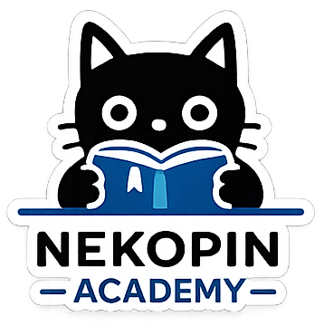
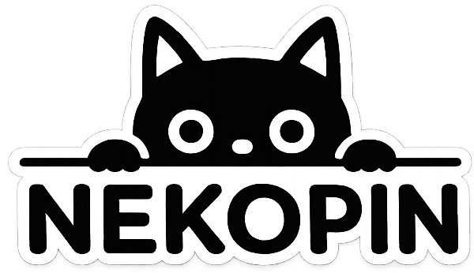
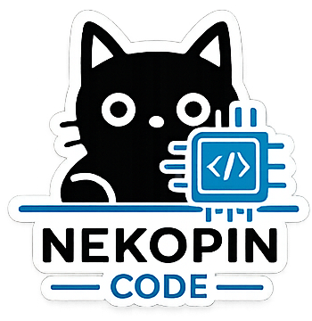
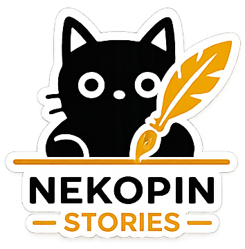

Nekopin Academy
Formación práctica, talleres didácticos y recursos estructurados de aprendizaje.
Educación & Formación
Proporcionamos estructura, diseño y desarrollo para convertir conceptos en software funcional, experiencias educativas y juegos físicos o digitales.
Espacios dedicados para dar forma a cada tipo de proyecto.

Formación práctica, talleres didácticos y recursos estructurados de aprendizaje.
Educación & Formación
Desarrollo a medida, sistemas locales offline, arquitectura web y soluciones claras.
Software & Sistemas
Diseño de juegos de cartas físicos, experiencias de mesa y desarrollo de videojuegos independientes.
Mesa & Videojuegos
Laboratorio de narrativa, construcción de universos y proyectos literarios en desarrollo.
Narrativa & FicciónExplora los sistemas construidos, recursos formativos e iniciativas en desarrollo.
Guía formativa y pedagógica orientada a padres de familia para el uso consciente, seguro y constructivo de dispositivos en el hogar.
Sistema táctil de toma de pedidos multinivel en caja conectado en tiempo real con un monitor de despacho para cocina y cálculo de envíos.
Plataforma para registro de pedidos multicanal, deducción automática de existencias al entregar y generación de reportes contables.
Diseño de mecánicas de mesa, prototipos de cartas y experimentación lúdica en etapa de conceptualización.
Exploración de relatos, ambientación y escritura de mundos en desarrollo.
«Nekopin nace de las ideas. Ideas grandes, pequeñas, extrañas, útiles, divertidas o difíciles de explicar. No todas tendrán el mismo destino. Algunas se convertirán en historias. Otras en juegos. Otras en cursos. Otras en software. Algunas quizá nunca lleguen a terminarse.
Pero toda idea merece ser escuchada, explorada y tratada con respeto. Nekopin existe para llevar esas ideas un paso más allá.»